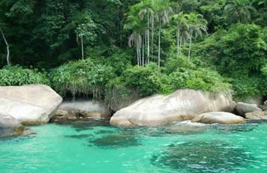
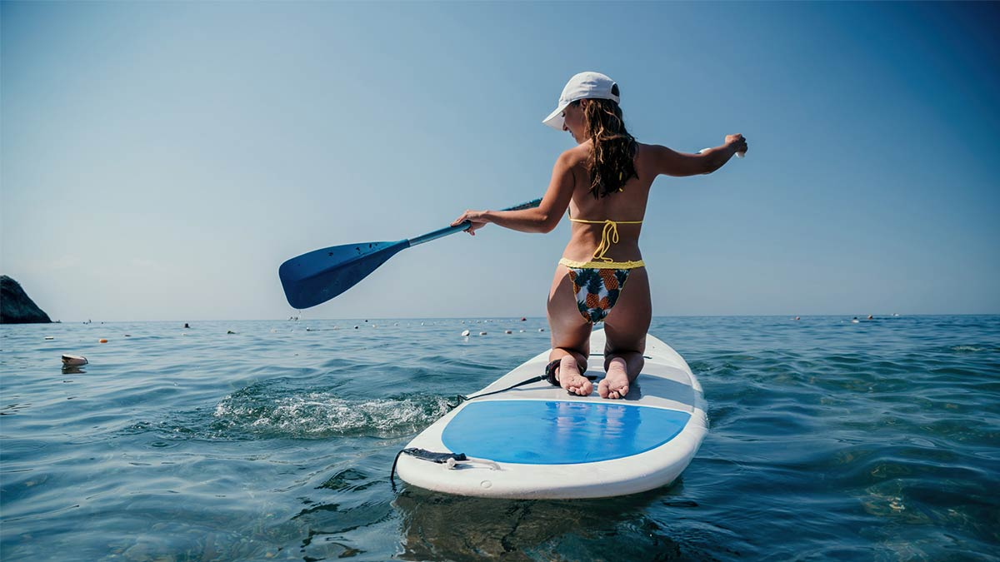
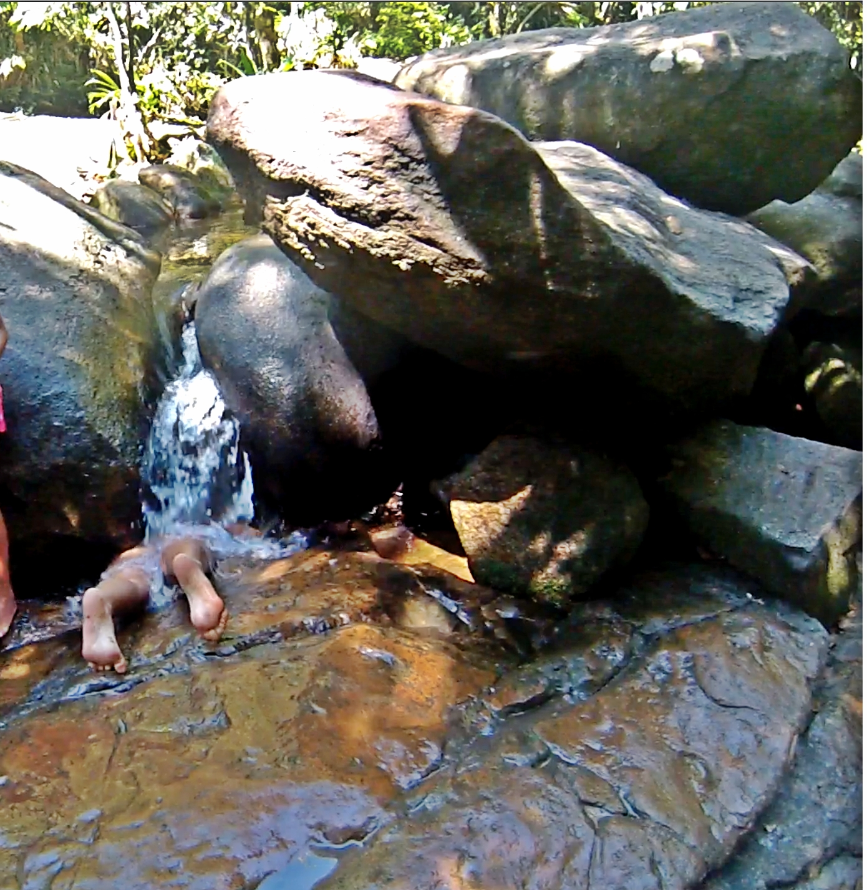

🌴 Excursão Exclusiva: Trindade, Paraty & Reserva da Bocaina (RJ)
Descubra um dos destinos mais paradisíacos e preservados do litoral brasileiro. A vila de Trindade está localizada dentro de uma área de proteção ambiental estratégica: a região de sobreposição entre o Parque Nacional da Serra da Bocaina e a APA de Cairuçu. Isso significa que, ao visitar Trindade, você estará imerso em um santuário de Mata Atlântica intocada, onde as montanhas da cordilheira da Bocaina encontram diretamente as águas cristalinas do oceano.
Preparamos um roteiro completo de um dia para quem quer explorar o melhor dessa reserva biológica com total conforto, aventura e segurança.

🌊 O que espera por você nessa aventura ecológica:
- Piscina Natural do Cachadaço: Uma piscina de águas cristalinas e calmas, protegida por grandes rochas vulcânicas, perfeita para relaxar e nadar entre peixes coloridos em plena área de preservação.
- Aventura na Pedra que Engole: Uma parada obrigatória e divertida nas cachoeiras que descem da reserva. Uma queda d'água onde você entra por uma fenda na rocha e "desaparece", saindo do outro lado em uma galeria natural.

🕒 Roteiro Oficial do Dia
Trilha Ecológica e Piscina Natural do Cachadaço
Caminhada leve por dentro da Mata Atlântica preservada até a piscina natural. Parada para banho e prática de Snorkel.
Expedição à Pedra que Engole
Subida rápida pela trilha da cachoeira para conhecer e viver a experiência da famosa atração moldada pelos rios da serra.
Almoço de Encerramento (Restaurante Indicado)
Parada no tradicional Restaurante do Cepilho (ou Restaurante Aconchego), o mais indicado da região, conhecido por sua excelente gastronomia caiçara, peixes frescos e uma vista espetacular para o mar e para as pedras da praia. (Consumo opcional / por adesão).
Retorno
Embarque no transporte executivo e início da viagem de volta.

📋 Informações Gerais e Reservas
- O que está incluso: Transporte executivo (ida e volta), guias locais e equipamentos (Snorkel e pranchas de SUP).
- Data: [24/10 , 21/11 e 05/12]
- Horário de Saída: [22:30]
- Local de Partida: [ung]
⚠️ Nota: Por se tratar de uma área de reserva ambiental, as vagas para este destino são estritamente limitadas para garantir o mínimo impacto ecológico e o suporte adequado da nossa equipe durante as atividades.
Garantir minha vaga? Entre em contato com a equipe de organização pelo botão de atendimento ou WhatsApp.